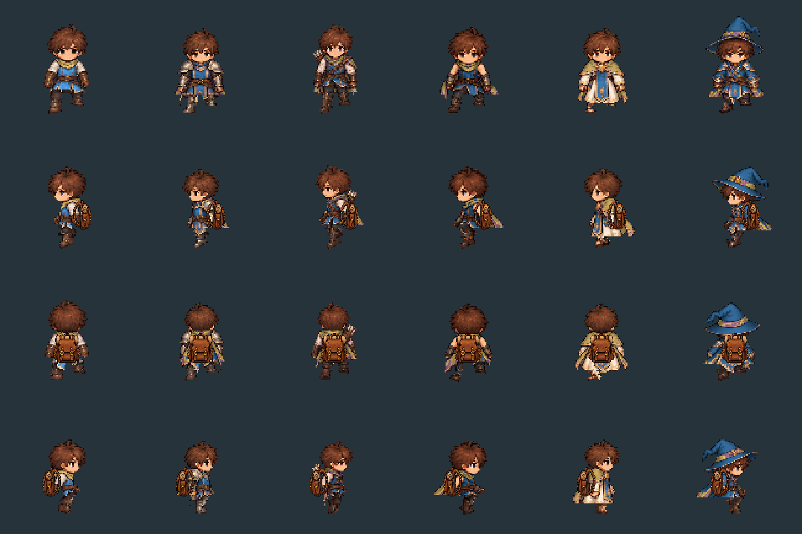
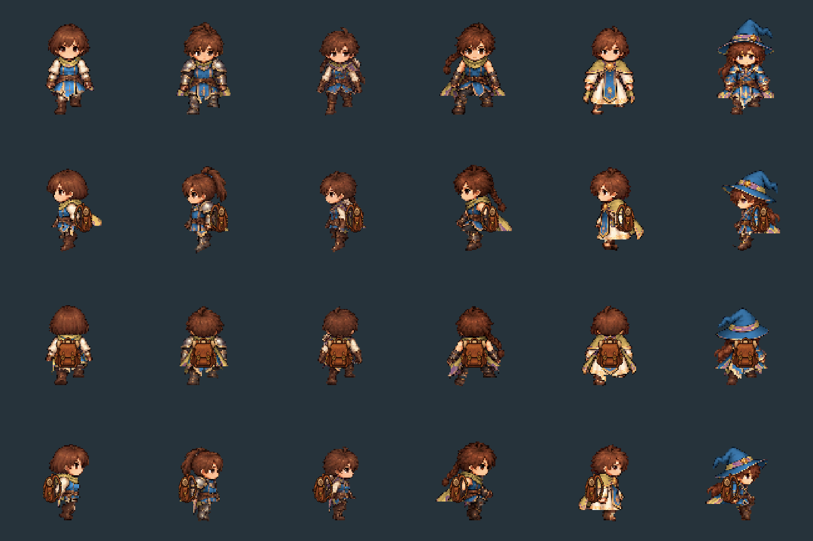
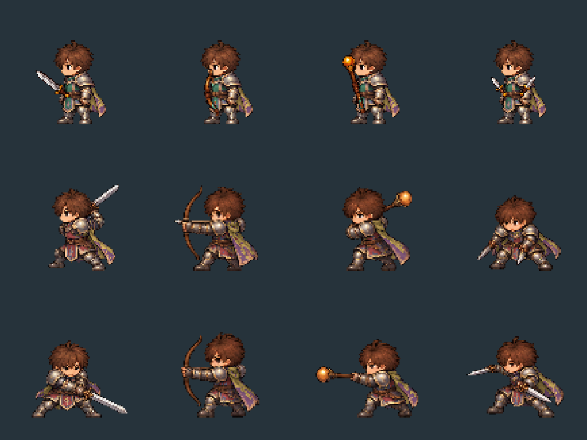
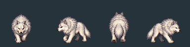
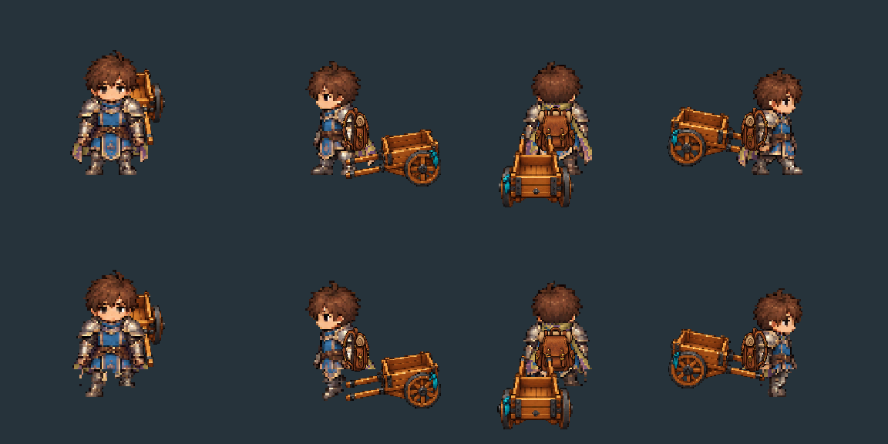
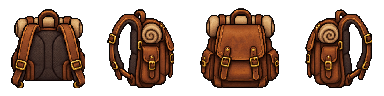
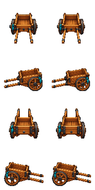

Prancha nativa: repouso, três passadas, preparação, mordida, recoil, uivo e morte

Quadros preparados por classe, corpo, direção e família de arma. Acabamento manual autorizado. Esta galeria permite inspecionar a escala nativa e a ampliação sem suavização. Aprovação artística provisória, aguardando inspeção do usuário.
Clique em uma direção para examiná-la em 3×. As sequências abaixo usam os mesmos atlas selecionados pelo jogo. A confirmação de dano e o tempo das ações pertencem ao servidor; a velocidade desta galeria serve apenas à inspeção.
Quatro fases: contato, passagem, contato oposto e passagem oposta. Pernas e braços alternam apoio, com oscilação discreta do corpo. Os desenhos completos são preparados fora do jogo.
Capturas do mesmo renderizador usado no jogo. Máscaras independentes recolorem o tecido; pele, cabelo e equipamento mantêm suas cores. O cabelo e a expressão acompanham o desenho da classe; os dados antigos permanecem salvos.



Pelagem branca, olhos vermelhos e cicatriz no olho esquerdo anatômico: à direita de quem observa a frente; visível no perfil esquerdo e oculta no perfil direito e nas costas. As direções foram desenhadas separadamente.

Mochila com quatro vistas; carrinho com quatro direções e dois estados das rodas. Capacidade e regras de equipamento permanecem as existentes.
Posição final do carrinho no renderizador: afastamento de 1,1 unidade e deslocamento lateral de 0,35, apenas visual. Repouso na primeira linha; deslocamento na segunda.



Capturas e medições são produzidas em perfis temporários. Nenhum banco oficial é utilizado para estes testes.